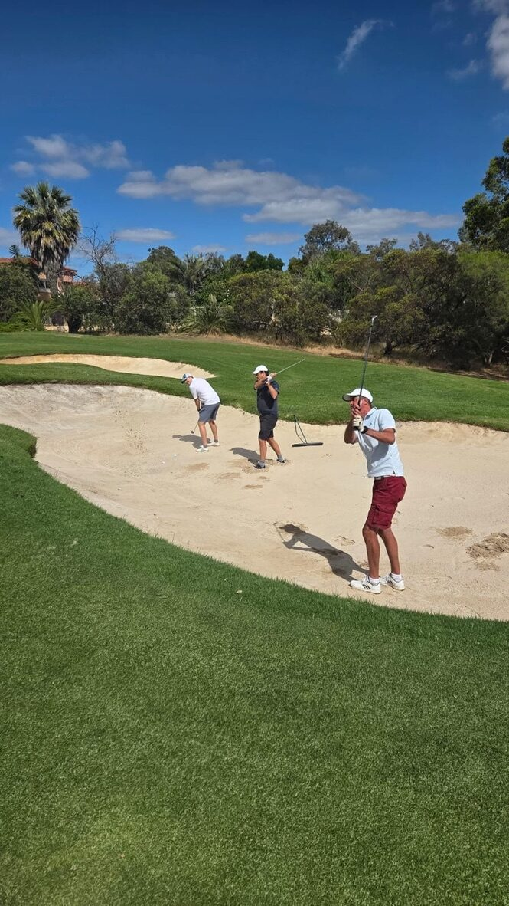
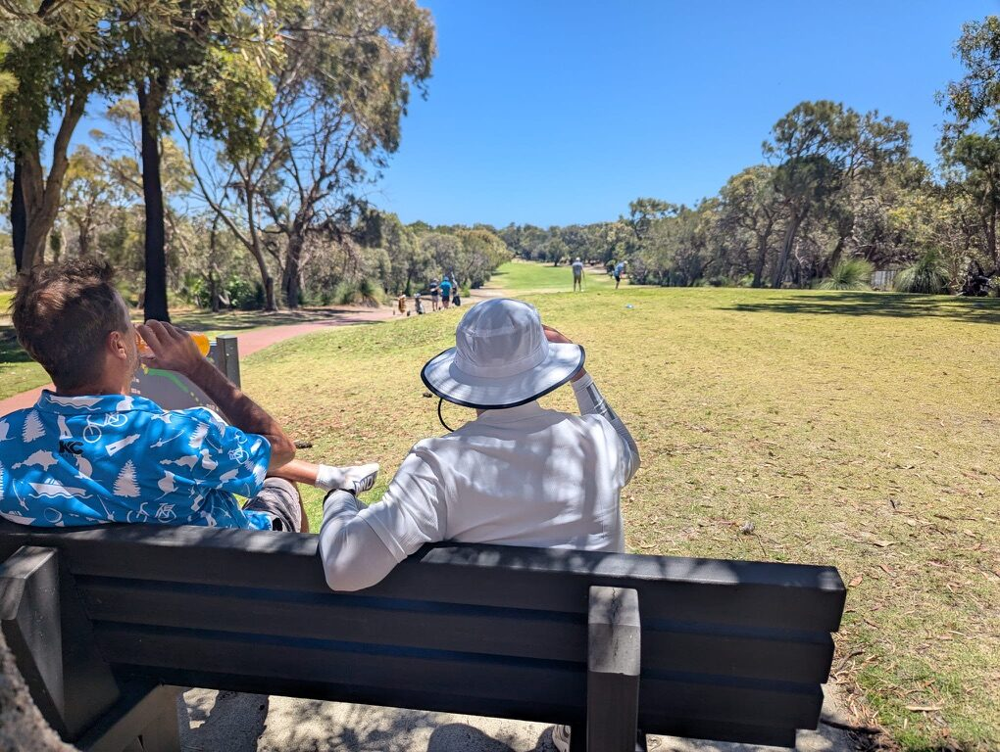
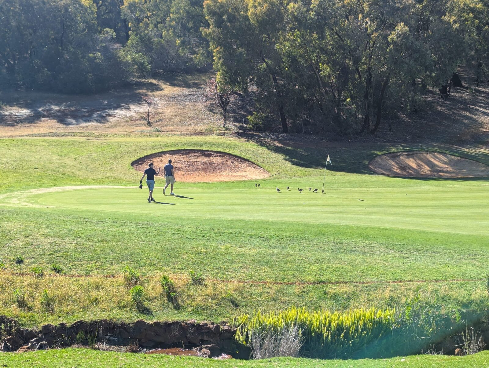

2026 Program
Most venues and tee times below are locked in. Friday's course is still being decided between three options and will be confirmed closer to the date. The overall shape: warm-up round Thursday, two qualifying rounds, matchplay finals and flights home on the Sunday.
Thursday 15 October: Arrival & Warm-Up Round
15 October 2026
Meadows Springs · 10:40am tee time
Playing: Casper, Huub, Juriaan, Olaf K.
- Crew arrives in Perth
- Pre-tournament warm-up round at Meadows Springs
- Easy beers at 1 Bantry Court, Kallaroo
- Settle in, catch up, early night before golf starts 😂
Friday 16 October: Qualifying Round 1
16 October 2026
Wembley / Carramar / Collier Park TBD
Playing: Alex, Huub, Juriaan, Olaf K., Olaf B, Mack, Eege
- Wake up + breakfast
- Stableford qualifying round
- Longest drive / nearest the pin, holes TBC
- Evening: Pubbing in Northbridge
Saturday 17 October: Qualifying Round 2
17 October 2026
Araluen · 11:00am & 11:10am tee times
Playing: Alex, Huub, Juriaan, Olaf K., Olaf B, Mack, Eege
“A bit of a drive, but very much worth it. Huub mastered this course in 2025 to (finally) secure his KC win.”
- 8:30am rise
- Wake up + breakfast
- Leave at 9:30am
- Stableford qualifying round
- Longest drive / nearest the pin, holes TBC
- Evening: Dip in the ocean, followed by pool BBQ
Sunday 18 October: Finals & Departure
18 October 2026
Kennedy Bay Links · 8:06am tee time
Playing: Alex, Huub, Juriaan, Olaf K., Olaf B, Mack
“Driving a bit further again down the coast. A magnificent Links course will be the battlefield for this year's final.”
- 5:30am rise
- Wake up, breakfast, pack
- Leave at 6:30am
- Matchplay finals with handicap correction: top 4 Stableford scorers play off for the Cup and 3rd/4th, next 3 play off for 5th–7th
- Awards ceremony & trophy presentation
- Leave for airport 2:30pm (arrive 3:30pm)
Format reminder
Full breakdown of how the qualifying rounds and Sunday finals work on the Playing Format page.
On the course last year


